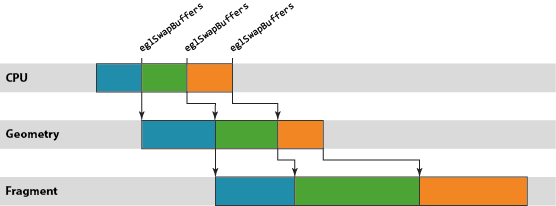

[译]The Mali GPU: An Abstract Machine, Part 1 - Frame Pipelining
图形工作负载的优化对于许多现代移动应用程序而言往往必不可少，因为几乎所有渲染现在都直接或间接地由基于 OpenGL
ES 的渲染后端负责处理。我的同事 Michael McGeagh 最近发表了一篇工作指南 [http://community.arm.com/docs/DOC-8055]，介绍如何将 ARM®DS-5™ Streamline™ 性能分析工具用于 Google Nexus 10，对利用Mali™-T604 GPU 的图形应用程序进行性能分析和优化。Streamline 是一款强大的工具，能够深入细致地洞悉整个系统的行为，但也需要驾驭它的工程师能够解读相关数据，识别问题区域，进而提出修复建议。
对于初涉图形优化的开发人员而言，起步阶段总会遇到一些困难，所以我写了新的系列博文，给开发人员提供必要的知识，以便他们能够成功地针对 Mali GPU进行优化。在整个系列博文中，我将阐述开发人员必须要考虑的基本宏观体系结构和行为、这些因素如何转化为能被内容触发的潜在问题，以及最终如何在Streamline 中找出这些问题。
Abstract Rendering Machine
要想成功分析应用程序的图形性能，必须先掌握一个最基本的知识，也就是对 OpenGL ES API 底下系统运作方式建立一个心智模型，让工程师能够推断他们观察到的行为。
为避免让开发人员陷于驱动程序软件和硬件子系统的实施细节的沼泽之中（这些他们无法控制，因而价值有限），有必要定义一个简化的抽象机器，用作解读所观察到的行为的基础。这一机器包含三个有用部分，它们大体上是独立不相干的，所以我将在本系列博文的开头几篇中逐一介绍。不过，为了让你对它们有个初步印象，下面列出该模型的三个部分：
- CPU-GPU 渲染管线
- 基于区块的渲染
- 着色器核心架构
在本篇博文中，我们将探讨第一个部分，即 CPU-GPU 渲染管线。
同步API，异步执行
务必要了解的一个基本知识是，OpenGL ES API 上应用程序函数调用和这些 API 调用所需渲染运算的执行之间的临时关系。从应用程序的角度而言，OpenGL ES API 被指定为同步 API。应用程序进行一系列的函数调用来设置其下一绘制任务所需的状态，然后调用 glDraw[1] 函数（通常称为draw call）触发实际的绘制运算。由于 API 是同步的，执行绘制调用后的所有 API 行为都被指定为要像渲染运算已经发生一样进行，但在几乎所有硬件加速的 OpenGL ES 实现上，这只是一种由驱动程序堆栈维持的美妙假象。
与绘制调用相似，驱动程序维持的第二个假象是end-of-frame buffer flip。大多数头一次编写 OpenGL ES 应用程序的开发人员会告诉你，调用 eglSwapBuffers将交换其应用程序的前缓冲和后缓冲。虽然这在逻辑上是对的，但驱动程序再一次维持了同步性的假象；在几乎所有平台上，实际的缓冲交换可能会在很久之后才会发生。
Pipelining
正如你所想到的，需要创造这一假象的原因在于性能。如果我们强制渲染运算真正同步发生，你就会面临这样的尴尬：CPU 忙于创建下一绘制运算的状态时，GPU 会闲置；GPU 执行渲染时，CPU 会闲置。对于以性能为重的加速器而言，所有这些闲置时间都是绝然不可接受的。
为了去除这一闲置时间，我们使用 OpenGL ES 驱动程序来维持同步渲染行为的假象，而在面纱之后实际是以异步执行的方式处理渲染和帧交换。通过异步运行，我们可以建立一个小小的工作储备以允许创建一个管线，GPU 从管线的一端处理较旧的工作负载，而 CPU 则负责将新的工作推入另一端。这一方式的优势在于，只要管线装满，就始终有工作在 GPU 上运行，提供最佳的性能。
Mali GPU 管线中的工作单元是以Render Target为单位进行计划的，其中Render Target可能是屏幕缓存或离屏缓存。单个渲染目标通过两步处理。首先，GPU 为渲染目标中的所有绘制调用处理顶点着色[2]。然后，为整个渲染目标处理片段着色[3]。因此，Mali 的逻辑渲染管线包含三个阶段：CPU 处理阶段、几何处理阶段，以及片段处理阶段。

Pipeline Throttling（管线节流）
观察力敏锐的读者可能已注意到，上图中片段部分的工作是三个运算中最慢的，被 CPU 和几何处理阶段甩得越来越远。这种情形并不少见；大多数内容中要着色的片段远多于顶点，因此片段着色通常是占主导地位的处理运算。
在现实中，最好要尽可能缩短从 CPU 工作结束到帧被渲染之间的延时 – 对最终用户而言，最让人烦躁的莫过于在操作触控屏设备时，其触控事件输入和屏幕中数据显示之间出现数百毫秒的不同步 – 所以，我们不希望等待片段处理阶段的工作储备变得过大。简而言之，我们需要某种机制来定期减慢 CPU 线程，当管线足够满、能够维持良好性能时停止把工作放入队列。
这种节流机制通常由主机窗口系统提供，而不是图形驱动程序本身。例如，在 Android 上，我们只有在知道缓冲方向时才能处理任何绘制运算，因为用户可能会旋转其设备，造成帧大小出现变化。SurfaceFlinger— Android 窗口表面管理器 – 可以通过一个简单方式控制管线深度：当管线中排队等待渲染的缓冲数量超过 N 个时，拒绝将缓冲返回到应用程序的图形堆栈。
如果出现这种情形，你就会看到：一旦每一帧达到“N”时 CPU 就会进入闲置状态，在内部阻止 EGL 或 OpenGL
ES API 函数，直到显示屏消耗完一个待处理缓存，为新的渲染运算空出一个位置。
如果图形堆栈的运行快于显示刷新率，同样的方案也可限制管线缓冲；在这一情形下，内容受到VSYNC限制”并等待垂直空白（VSYNC同步）信号，该信号告诉显示控制器它可以切换到下一缓冲。如果 GPU 产生帧的速度快于显示屏显示帧的速度，那么SurfaceFlinger 将积累一定数量已经完成渲染但依然需要显示在屏幕上的缓冲；即使这些缓冲不再是 Mali 管线的一个部分，它们依然算在应用程序进程的 N 帧限制内。
正如上面的管线示意图所示，如果内容受到VSYNC同步限制，那么会经常出现 CPU 和 GPU 都完全闲置的时段。平台动态电压和频率调节 (DVFS) 通常会在此类情形中尝试降低当前的工作频率，以降低电压和功耗，但由于 DVFS 频率选择通常相对粗糙，所以可能会出现一定数量的闲置时间。
小结
本篇博文中，我们探讨了 OpenGL ES API 提供的同步假象，以及 API 下实际运行异步渲染管线的原因。敬请期待下一篇博文，我将继续往下开发这一台抽象机器，探讨 Mali GPU基于区块的渲染做法。
备注：
[1] 执行绘制的 OpenGL ES 绘制函数有许多，本例中选用哪一个其实没什么关系。
[2] Vertex (computer graphics) – （顶点（计算机图形）） - 维基百科，自由的百科全书
[3] Fragment (computer graphics) - （片段（计算机图形）） - 维基百科，自由的百科全书